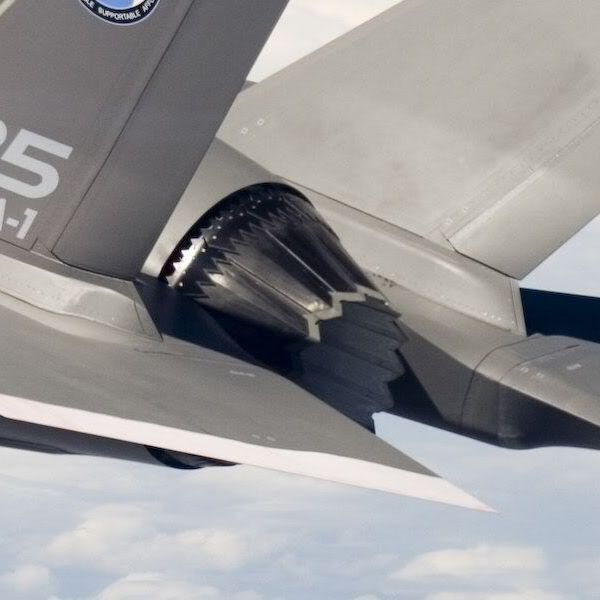
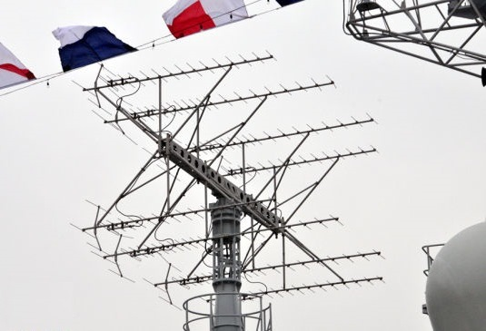
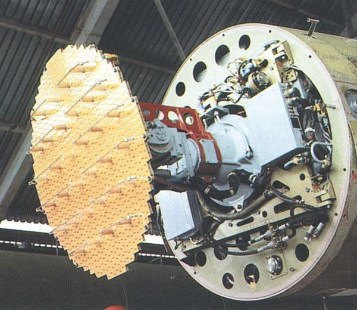
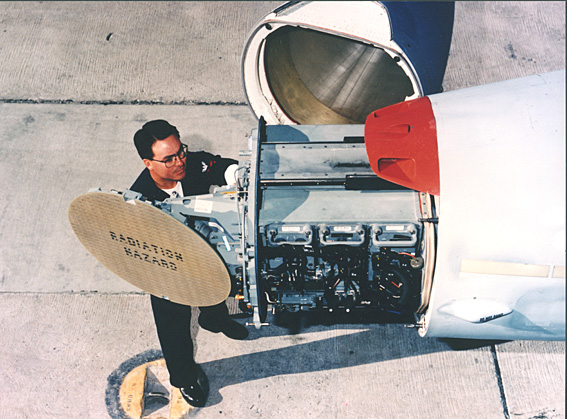
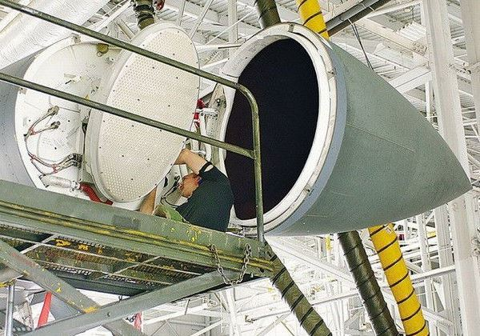

2014-08-09 13:38:00
改用頻率更高的波段還有一個好處，就是可以分辨目標的形狀。波的反射性質和一般人（其實不只是一般人，牛頓也曾犯過這個錯誤）熟悉的子彈式軌跡大不相同，也就是有繞射現象。這可以分成三個類別來討論：1）當障礙物遠小於波長時，以繞射為主，能量向四面八方均勻散射，也就是前面我們定義雷達截面積時做過的假設；2）當障礙物大小約略等於波長時，繞射反射皆有，能量主要向入射方回頭散射，但是方向性不明顯，此時雷達接收到大約兩倍於基於均勻散射假設所預測的反射波，所以有些人說反射波因“干涉”而增強；3）當障礙物遠大於波長，亦即在波長的八倍以上時，可以視為純反射，此時障礙物的表面形狀決定各部位如何反射雷達波，雷達接收的信號可以經由電腦計算來反推目標的大致形狀，尤其是引擎風扇葉片數特別容易分辨，現代雷達經常由此而確認目標的機型。
此外，高頻率波段也比較容易做出較窄的波束，這様不但功率密度增加，而且在方位角的定位精度也會大幅提高。尤其是雷達導向飛彈的出現，對雷達定位精度做出史無前例的要求，以當時的技術，只有X Band以下才能勉強滿足。由於以上的種種因素，再加上陣列天線的發明與普及，蘇聯，西歐和美國的軍工廠商自1970年代起，基本上除了超大型的戰略警戒雷達（如台灣近年出銭請美國建造管理的“鋪路爪”，選用了VHF）外，不再使用L Band以上的波段。不幸（對雷達使用者而言）的是，這個現代化的步驟不經意地鼓勵了隱身技術的發展；理由很簡單：S Band以下的波段其波長在15公分以下，八倍波長只有不到1.2公尺；而F117的外形基本上由至少一公尺長的直線構成，像鏡面一様把這些新式雷達的電磁波集中反射到幾個特定的方向，散射回入射波方向的功率微乎其微。這恰是隱身技術的學理基礎。
戰鬥機用的雷達，因為空間有限，更是全面採用了X Band以下的波段，其波長在3.75公分以下，八倍波長也只有不到30公分。有了新式電腦的F22設計團隊（包括了洛克希德，波音和通用動力）便有了更大的自由來滿足氣動方面的要求。最重要的是F22可以採用常規佈局，帶邊條的主翼在前，平尾在後，外形雖然多了不少長度頗小於一公尺的邊線，但是不像F117和B2的飛翼機形在超音速飛行時阻力那麼大。此外例如彈艙門縫原本是個大反射源，現在可以設計成鋸齒形邊緣；只要鋸齒每一邊都大於30公分，那麼雷達波仍然會被安全地集中反射到旁邊去。又如最新的F35戰鬥攻撃機所用的F135噴射引擎噴射口，還是做了這種鋸齒形處理。不過這些隱身設計既然都是針對短波長的雷達而做的，F22和F35對舊式的長波長雷達的截面積就反而與非隱身戰機差不多了。但是到了F22出現的1995年，F22設計時的假想對手-蘇聯-早已分崩離析，至今俄國國力仍舊衰弱，雖然對反隱身雷達的研究做了些投資，美國根本不把他放在心上。要有系統有效率地開發出能撃破F22的隱身盾的新長矛，還是只有中共。

F35的尾巴；鋸齒的尺寸顯然小於30公分，是F35隱身能力有限的又一證明。
既然形狀是隱身技術的主要環節，反制它的最自然的手段就是回頭用L Band以上的大波長雷達波，尤其是VHF，其波長在一公尺以上，F22的許多一公尺上下的邊線，剛好因“干涉”現象而呈現特強的反射。不過VHF天線實在太大了，連預警機都裝不下，只有海軍艦隻才適合裝備。在1980年代，中共的軍工技術還只相當於美蘇1950年代的水準，恰好有從蘇聯引進的舊VHF雷達做様本，用現代的積體電路換掉了真空管之後，居然就是一型反隱身能力極強的警戒雷達，這就是H/LJQ-517 。經過將近30年，中共的軍工技術已經開始超越俄國，可以望美國的項背；但是今年三月才剛服役的最新型052D驅逐艦，仍然裝備了H/LJQ-517系列，可見其藉著大波長的物理性質在反隱身任務上所具有的獨特優勢是很難以工程手段來複製的。

052C級驅逐艦上的H/LJQ-517B雷達；其由8個八木天線組成的陣列清晰可見。
VHF雷達的波束太寛，雖然可以在遠距離偵測到隱身戰機，卻不能進行精確定位，也不能做目標識別。做為警戒雷達，寛波束不是太大的問題，它仍舊可以及早發現可疑的隱身目標，但是接下來的跟踪，鎻定和飛彈制導還是必須由波長較短的雷達來執行。為了禰補波長上吃的虧，必須用工程上的手段來加強雷達的功率密度和增益（Gain），而這就必須從天線的設計上著手。
遠在1960年代，所有UHF波段以下的雷達天線還都是拋物面式的；當時最尖端的科技是脈沖多普勒雷達（Pulse－Doppler Radar），也就是根據反射波的相位改變來分辨目標的速度，從而把高速運動的軍事目標和背景分離出來；這就是所謂的下視下射（Look-Down Shoot-Down）功能的基礎。在此之前，因為地面的反射波太多太雜，飛機上的雷達是不能向下看的。那個年代開發出來的雷達，現在還在國軍序列中廣泛使用，例如E2T預警機上的AN/APS-145雷達用的就是UHF頻道的拋物面天線（美國最新的E2D將升級採用的AN/APY- 9 ，還是UHF波段，但是改為AESA天線，不過還沒服役）。
1960年代開始的新一代陣列式天線的研究，到1970年代之後逐步開花結果，到現在已經全面取代了拋物面式天線。
最簡單的陣列式天線是縫隙陣列天線（Slot Array Antenna），早在1938年就發明了，但是到1970年代微電子技術成熟以後才獲得普及。它利用電磁波相位干涉的原理加強波束中心（“主瓣”）的強度並抑制浪費到其他方向（“副瓣”）的能量。套用在本文前部的公式，就是藉縮小波束寛度s來增加雷達的探測能力；因為s與陣列單元的數量n成反比，而雷達的探測能力也與波束寛度s成反比，所以探測能力與n成正比，不過每個縫隙單元的功率和效率基本等同於雙極天線，一對一比較時是遠遠比不上拋物面式天線的，因此縫隙陣列天線只有在波長較短的X Band以下時有足夠大的n，才最有競爭力。

俄製N011機載X Band雷達採用縫隙陣列天線；突起物是L Band的敵我識別天線；請注意天線後面的機械轉向軸。
縫隙陣列天線基本上仍是一種機械裝置，波束只能向垂直於天線的方向射出，因此與拋物面式天線一様，必須依靠機械轉向。而轉向用的機械必然有重量大，結構複雜，容易故障等缺點；而且機械轉向很慢，對波束寛的警戒雷達來說還不要緊，對搜索雷達而言，完成一次掃瞄需要較長的時間，在敵情千變萬化的現代戰場環境裡，實在是個缺點，也因此使得縫隙陣列雷達的海軍使用比較有限，其應用以1970年代服役的美軍戰鬥機為主；主要是因為其探測距離長的優點，對制導當時剛出現的半主動雷達空空導彈甚為重要。如F14，F15和F16的原裝雷達都是縫隙陣列。又如英國製的EF2000第一版CAPTOR雷達，用的也是縫隙陣列；不過在21世紀，這是已經明顯落後的裝備，只因西歐的軍用雷達技術遠遠落後於美國，不得不為之。俄國的雷達技術更加糟糕，SU-27的N001雷達原本計劃使用縫隙陣列天線，但是蘇聯在1980年代做不出來，只好仍用拋物面式天線。等到1990年代Tikhomirov設計所終於在Bars N011雷達上用了縫隙陣列天線，結果性能太差，沒有顧客，所以又等了十年，有了印度當冤大頭，才有銭改進為採用PESA（Passive Electronic Scanning Array）的N011M和N035。 
國軍F16A/B所裝備的AN/APG-66也使用縫隙陣列天線；同一代的軍用電子設備，美國的比俄國的出厰早，壽命長，重量輕，性能好，和噴射引擎並列為美國空軍的兩大主要技術優勢所在。
PESA就是針對機械轉向很慢這一缺點而改進的；它和縫隙陣列一様都由全陣列共用一個微波幅射產生器，但是（依接受方向的順序）加入了移相器（Phase Shifter）和1級與2級饋電裝置（Level 1 & Level 2 Feed），然後才經過縫隙陣列也有的雙工器（Duplexer），波導（Waveguide），接收機保護裝置（Receiver Protection）和放大器（Amplifier）。其主要的新功能在於每一個天線單元都可以有它自己不同的相位，如此一來波束可以偏離垂直方向，不需機械轉向就能掃瞄大片的空域，這便是所謂的電子掃瞄（Electronic Scanning）。電子掃瞄比機械掃瞄快得多了，完成一次搜索只需幾毫秒。 PESA的缺點在於其電磁波通路最長，移相器和饋電裝置對增益有負影響（單程大約-2.1dB），浪費了部分功率。不過PESA的快速掃描能力對全自動高速掠地飛行和非目視精確轟炸至關重要，而且轟炸機的電力供應遠比戰鬥機充裕，一點額外的損失無傷大雅，所以總體來考慮，PESA特別適合低空轟炸機和其他大型軍機。最早的空用PESA是1977年服役的E3預警機所用的AN/APY-1（增加對海搜索能力後，改名為AN/APY-2）和1983年開始服役的B1B所用的AN/APQ-164（同年，Ticonderoga號巡洋艦服役，其所裝備的AN/SPY-1神盾雷達也是PESA）。隨後的B2所用的AN/APQ-181原本也是PESA，在2010年改進成了AESA。俄軍的SU-34戰鬥轟炸機用的V004雷達也是PESA。至於空優戰鬥機用PESA的就不多了，只有AESA技術有問題的俄國（SU-30MKI和SU-35）和法國（Rafale，陣風）才不得已而為之。

B1B的機頭特寫；與縫隙陣列相比，PESA省略了轉向用的機械軸，但是天線明顯增厚。
【待續】